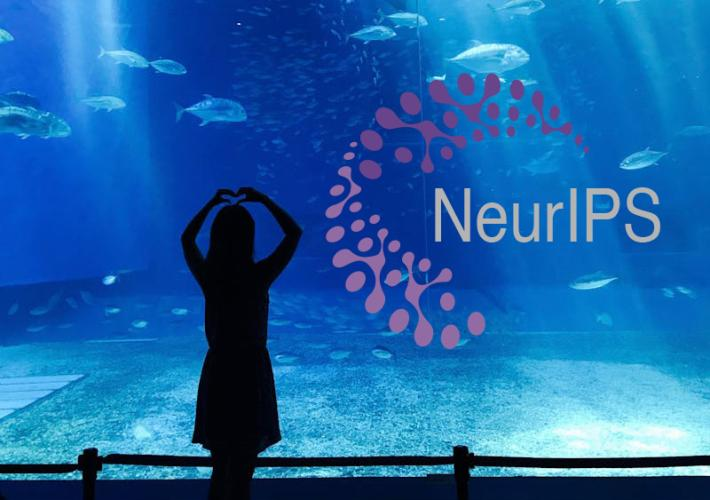

The Imageomics Institute is set to make a significant impact at the upcoming 2024 Neural Information Processing Systems (NeurIPS) conference, with two research papers selected for presentation.
NeurIPS, one of the leading AI and machine learning conferences, will take place Dec. 10-15 at the Vancouver Convention Center.
The conference, now in its 38th year, attracts experts from around the world to share advancements in AI, including its applications to interdisciplinary fields. The Imageomics Institute’s research demonstrates how AI methods can be applied to biological data, helping uncover insights about biodiversity.
Papers Selected for Presentation
The first paper, linked at “VLM4Bio: A Benchmark Dataset to Evaluate Pretrained Vision-Language Models for Trait Discovery from Biological Images,” introduces a new dataset designed to test AI systems’ ability to identify traits in biological images. The research, led by M. Maruf and a team that includes Tanya Berger-Wolf and Paula Mabee, aims to provide a resource for evaluating vision-language models in ecological and evolutionary biology contexts.
The second paper, linked at “Fine-Tuning is Fine, if Calibrated,” focuses on methods for improving the calibration of fine-tuned vision-language models. This work, co-authored by Zheda Mai, Yu Su, and Berger-Wolf, provides a framework for ensuring model reliability, particularly when applied to scientific datasets.
Both papers emphasize the practical use of AI in analyzing complex biological datasets, addressing challenges such as trait identification and model accuracy.
NeurIPS and Imageomics
NeurIPS, widely recognized for advancing AI research, serves as an important venue for researchers to share and critique new methods. The conference features keynote speakers, tutorials, and workshops alongside research presentations.
For Imageomics, the inclusion of these papers underscores the growing role of AI in biodiversity research. Using AI models to extract information from biological images supports efforts to monitor and understand ecological changes, aligning with NeurIPS’ focus on applying machine learning to solve real-world problems.
Future Plans
Researchers from Imageomics will present their findings through poster sessions and discussions at the conference, seeking feedback from the AI community. Future work includes refining these models and datasets, as well as exploring new collaborations to expand AI’s role in biological research.
For additional information, visit Imageomics Institute.